문화공간 · 단체지역별 다양한 문화관련 시설들을 공유합니다
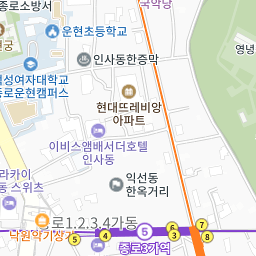
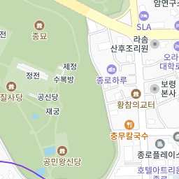
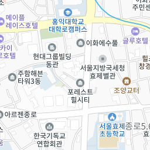
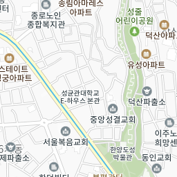
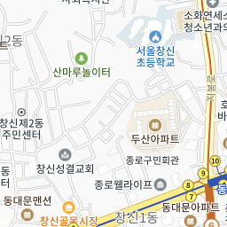
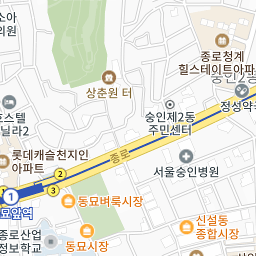
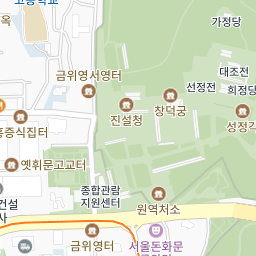
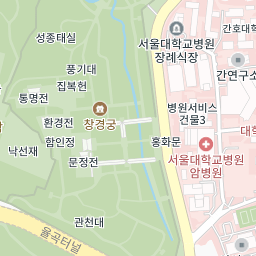
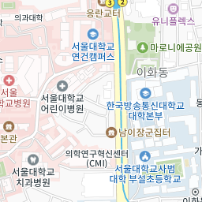
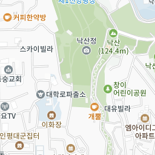
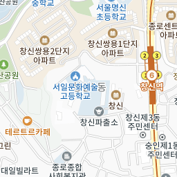
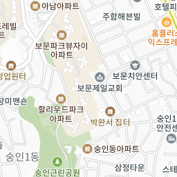
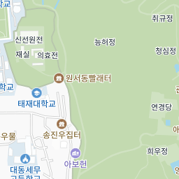
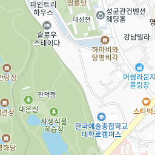
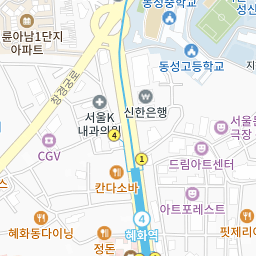
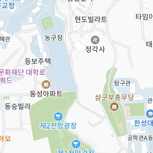
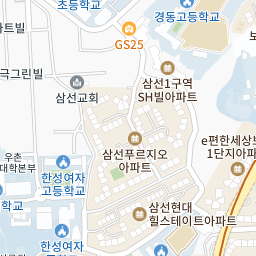
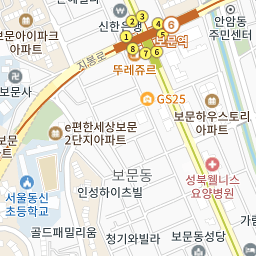
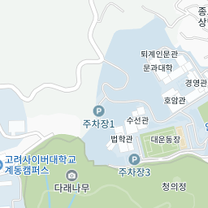
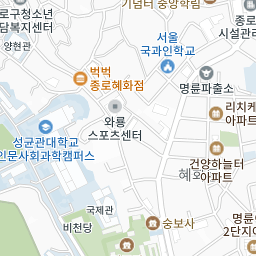
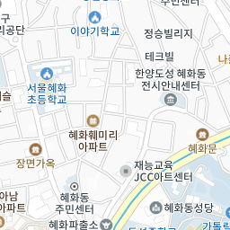
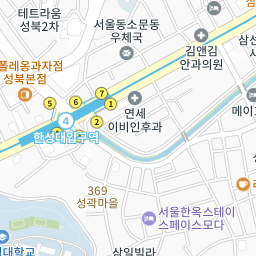
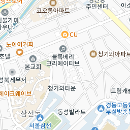
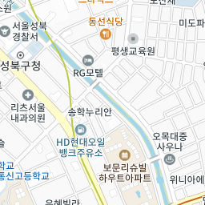
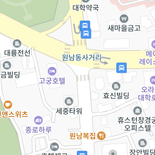
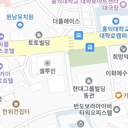
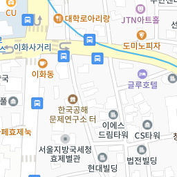
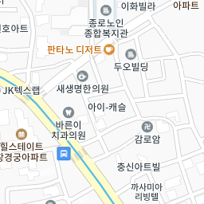
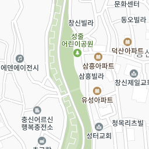
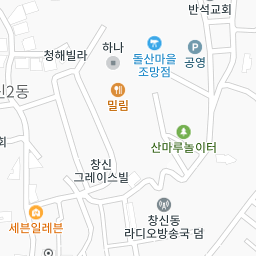
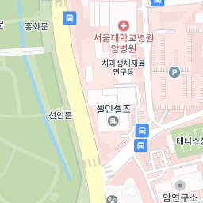
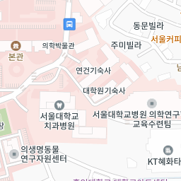
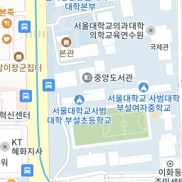
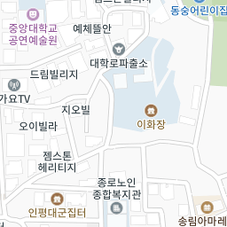
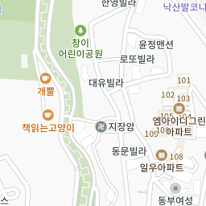
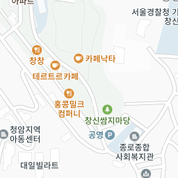
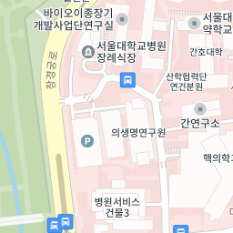
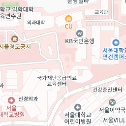
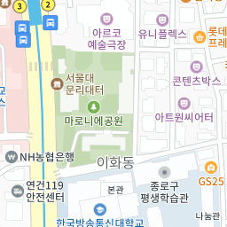
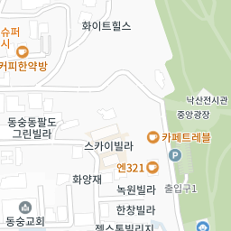
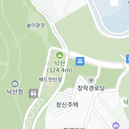
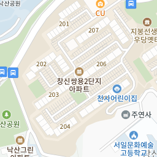
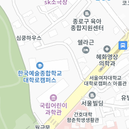
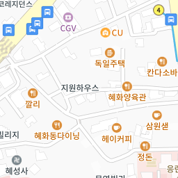
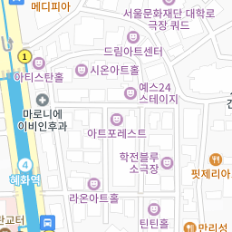
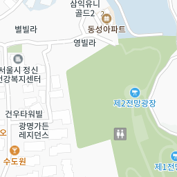
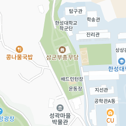
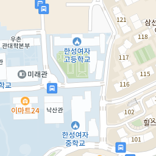
100m

총 692건
| 시설명 | 위치 | 문의전화 | 상세정보 |
|---|---|---|---|
| 서울특별시 종로구 동숭1길 1 | 자세히 보기 | ||
| 서울특별시 종로구 동숭1길 1 | 자세히 보기 | ||
| 서울특별시 종로구 삼청로7길 37 | 자세히 보기 | ||
| 서울특별시 종로구 청계천로 51-1 | 02-397-2686 | 자세히 보기 | |
| 서울특별시 종로구 청계천로 51-1 | 02-397-2686 | 자세히 보기 | |
| 서울특별시 종로구 성균관로 48-2 | 자세히 보기 | ||
| 서울특별시 종로구 율곡로19길 17-8 | 02-742-9500 | 자세히 보기 | |
| 서울특별시 종로구 대학로10길 17 | 02-3668-0007 | 자세히 보기 | |
| 서울특별시 종로구 동숭길 64 | 자세히 보기 | ||
| 서울특별시 종로구 동숭길 64 | 자세히 보기 |